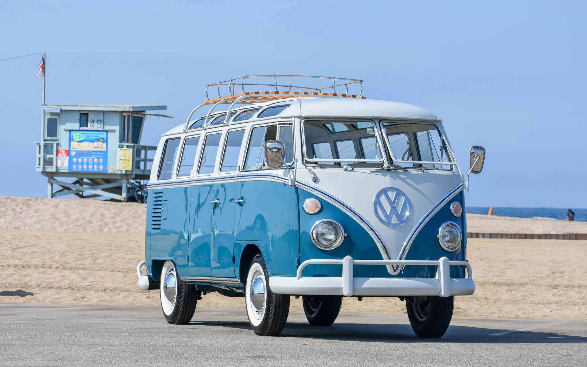

Volkswagen Beetle (1938–2003)
Motorizări: 1.1–1.6L boxer, benzină, răcire pe aer
Transmisie: manuală 4 trepte
Segment: compact
Cel mai longeviv model Volkswagen, devenit un simbol al mobilității globale.

Motorizări: 1.1–1.6L boxer, benzină, răcire pe aer
Transmisie: manuală 4 trepte
Segment: compact
Cel mai longeviv model Volkswagen, devenit un simbol al mobilității globale.
Motorizări: 1.1–1.5L boxer
Transmisie: manuală 4 trepte
Segment: utilitar/minivan
Cunoscut și ca „Bus” sau „Kombi”, a fost popular printre familii, comercianți și mișcările hippie.
Motorizări: 1.1–1.8L I4 (benzină, diesel)
Transmisie: manuală / automată
Segment: compact
A marcat începutul uneia dintre cele mai de succes linii compacte din lume.

Motorizări:
Benzină: 1.6 MPI, 1.8 TSI, 2.0 FSI, 2.0 TSI, 3.2 V6, 3.6 FSI V6
Diesel: 1.9 TDI, 2.0 TDI (PD și CR, 8v și 16v)
Transmisie: manuală 5/6 trepte, DSG 6/7, Tiptronic
Platformă: PQ46
Segment: D (midsize)
Passat B6 a fost un sedan de clasă medie construit pe platforma PQ46, renumit pentru confort și fiabilitate în versiunea diesel. A fost produs în Germania și alte uzine internaționale.

Motorizări: V6, V8, W12, V6 TDI, V8 TDI, hibrid
Transmisie: automată 6/8 trepte
Segment: SUV de lux
Primul SUV de lux produs de Volkswagen, în colaborare cu Porsche (platforma comună cu Cayenne).
Motorizări: electric – 148–299 CP
Autonomie: până la 550 km WLTP
Segment: SUV electric
Model global electric, frate mai mare al ID.3, disponibil în Europa, SUA și China.